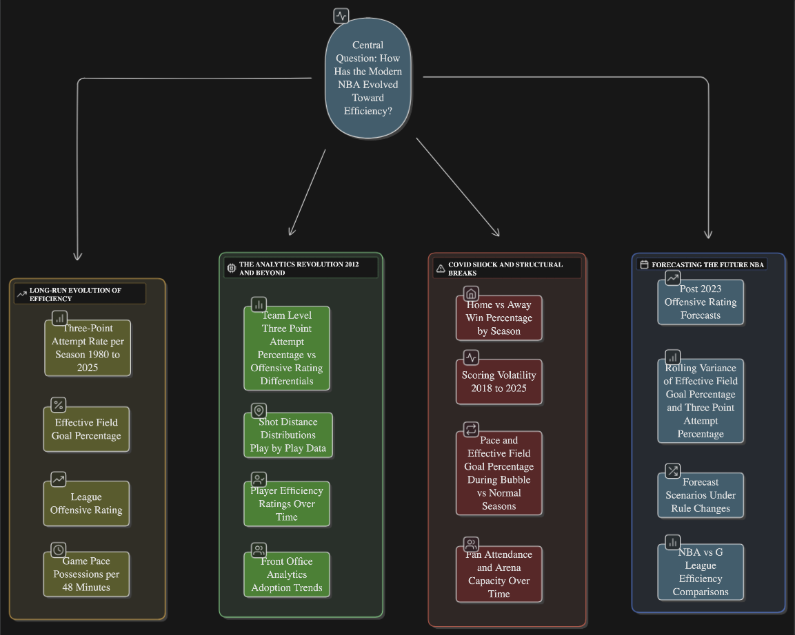

The Era of Efficiency: Analytics, COVID, and the Modern NBA
Introduction
Over the last two decades, the National Basketball Association (NBA) has undergone a historic transformation in how the game is played and measured. The rise of analytics has redefined decision-making, from shot selection to player valuation, creating a league increasingly optimized for pace, spacing, and efficiency. Traditional mid-range play has given way to data-driven offenses that favor the three-point shot and fast-break opportunities1. Yet this evolution has not been linear: external shocks such as the COVID-19 pandemic and rule changes have periodically disrupted the sport’s equilibrium.
This project seeks to quantify and contextualize the NBA’s evolution toward efficiency; particularly how the league’s statistical DNA has shifted under the influence of analytics, and how sudden disruptions like the 2020 “bubble” season temporarily rewired its dynamics. Using time-series analysis, the study traces the interplay between pace, three-point attempt rate, and offensive efficiency to reveal both long-term structural change and short-term volatility.
The Big Picture
Basketball today is not merely an athletic competition but a living laboratory of applied data science. The league’s embrace of analytics mirrors a broader transformation in modern industries: decisions increasingly rest on quantitative evidence rather than intuition. The shift from mid-range isolation to high efficiency, high variance offense encapsulates how optimization, technology, and information access shape human behavior, specifically in sports.

With the framework above, I aim to tell the story of how basketball’s offensive efficiency evolved under the dual pressures of analytics and disruption. The analysis begins with a long-run view of the game’s transformation: tracing how three-point attempts, shot selection, and pace redefined offensive output from 1980 through 2025. By examining league wide efficiency, field-goal percentages, and possessions per 48 minutes, I hope to capture how the modern NBA diverged from its slower, mid-range past into a data-optimized era of high variance offense.
From there, the focus shifts to the Analytics Revolution, a period beginning around 2012 when front offices embraced quantitative models and player-tracking data. Here, patterns in shot distance, efficiency metrics, and team-level statistics reveal how strategy and roster construction began to align with mathematical optimization. These structural changes not only reshaped offensive philosophy but also institutionalized analytics as a core component of competitive advantage.
The next chapter explores the COVID-19 shock, a natural experiment that disrupted decades of rhythm. Empty arenas, travel restrictions, and condensed schedules created conditions to test how context, apart from talent or tactics, influences performance. Comparing attendance patterns, scoring volatility, and pace before, during, and after the pandemic provides a rare window into basketball’s psychological and environmental dimensions.
Finally, the analysis turns toward the future. By modeling post-2023 trends using both traditional and modern time-series methods, the goal is to forecast whether the league has stabilized in a new equilibrium or continues to evolve. From evolution and optimization to disruption and re-emergence the project aims to capture how data, environment, and adaptation intertwine to define the modern game.
Literature Review
Early quantitative basketball research established the foundation for efficiency metrics such as effective field goal percentage (eFG%) and true shooting percentage (TS%)2. Subsequent work formalized offensive rating and pace-adjusted measures that underpin today’s analytics frameworks3. In this study, those established metrics anchor a longitudinal view of the NBA from 1980–2025, allowing us to trace how efficiency evolved and whether recent shifts reflect gradual adaptation or discrete regime changes.
A central thread is shot-selection optimization. Spatial analyses show that perimeter-oriented offenses and rim attempts yield higher expected value than mid-range play4. Building on that evidence, we follow the league’s shot mix over time and date its key inflection points using structural-break diagnostics. Forecast comparisons around those dated transitions then indicate whether the modern shot profile has stabilized or is still moving toward further concentration in high-value zones.
Tempo and spacing economics form the second pillar. Prior work links ball movement, spacing, and faster pace to scoring efficiency in the modern game1. Rather than treating pace and efficiency as static correlates, we examine their dynamic ordering: do changes in tempo precede shifts in efficiency, or the reverse? A multivariate framework lets us see how this relationship strengthened from the pre-analytics period into the analytics era, clarifying whether “playing faster” is a driver, a consequence, or part of a feedback loop with shot quality.
The third pillar addresses COVID-era disruptions. Empty-arena conditions in 2020 weakened traditional home-court effects and scrambled normal rhythms. We treat the bubble and capacity-limited seasons as an exogenous intervention, quantify the immediate impact on pace, efficiency, and scoring variance, and then measure persistence and recovery. By juxtaposing pre-2020 fitted behavior with realized outcomes through 2022, we can distinguish a temporary shock from a lasting structural shift.
Together, these components extend prior literature that established what changed (shot mix, tempo strategies, COVID effects) but seldom mapped how and when the transitions unfolded or whether they endured. Concretely, we (i) date the analytics inflection with objective break tests; (ii) test whether rising three-point volume leads or follows efficiency gains; (iii) model low-order serial dependence and feedback that cross-sectional designs omit; and (iv) isolate the pandemic’s impulse and its decay. Treating efficiency, pace, and shot selection as interconnected trajectories reveals the timing, coupling, and durability of the forces reshaping the modern NBA.
Guiding Questions
- How has the NBA’s offensive efficiency evolved since 1980?
- When did measurable statistical evidence of the analytics revolution emerge?
- Did the rise in 3-point attempt rate precede or follow improvements in efficiency?
- To what extent does game pace amplify or mediate the impact of shot selection?
- How did the 2020 “bubble” season disrupt established offensive and defensive patterns?
- How have attendance levels and arena dynamics evolved post-COVID?
- Are the relationships between 3-point volume, pace, and ORtg stable across eras?
- Do we observe permanent structural changes or temporary shocks surrounding COVID?
- Can time-series forecasts predict whether efficiency will continue to climb or plateau?
- What broader lessons about analytics-driven optimization can be drawn from the NBA’s evolution?
Main Referrence: Gamage, P. (2026). Applied Time Series for Data Science